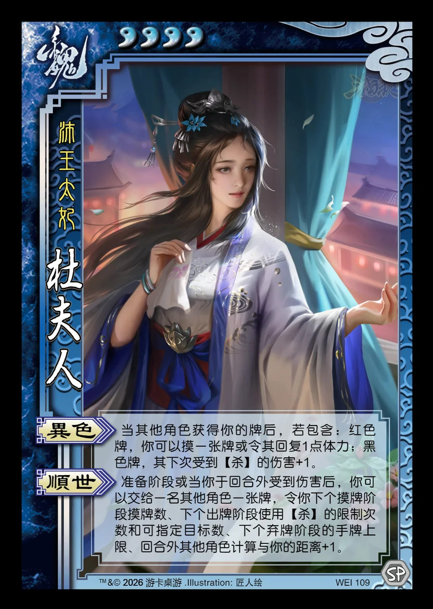

点击卡面查看大图
魏
杜夫人
♥4沛王太妃
异色
当其他角色获得你的牌后，若包含：红色牌，你可以摸一张牌或令其回复1点体力；黑色牌，其下次受到【杀】的伤害+1。
顺世
准备阶段或当你于回合外受到伤害后，你可以交给一名其他角色一张牌，令你下个摸牌阶段摸牌数、下个出牌阶段使用【杀】的限制次数和可指定目标数、下个弃牌阶段的手牌上限、回合外其他角色计算与你的距离+1。

点击卡面查看大图
沛王太妃
当其他角色获得你的牌后，若包含：红色牌，你可以摸一张牌或令其回复1点体力；黑色牌，其下次受到【杀】的伤害+1。
准备阶段或当你于回合外受到伤害后，你可以交给一名其他角色一张牌，令你下个摸牌阶段摸牌数、下个出牌阶段使用【杀】的限制次数和可指定目标数、下个弃牌阶段的手牌上限、回合外其他角色计算与你的距离+1。